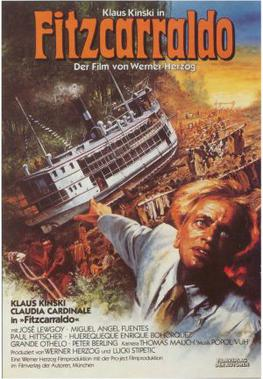

Fitzcarraldo

Werner Herzog
1982
158 minutes
Wikipedia link
IMDB link
TV Tropes link
This is text.
Time to choose something different:
- Bet it would be easier to get that ship through the jungle if someone only had a steamroller! - Turn to section 48
- At least no one drowned in those rapids. Safe boating is no accident! - Turn to section 22
- That was good but kind of long. Got anything by the same director, but maybe shorter? - Turn to section 106